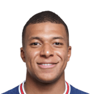
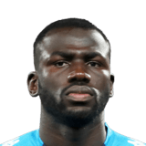
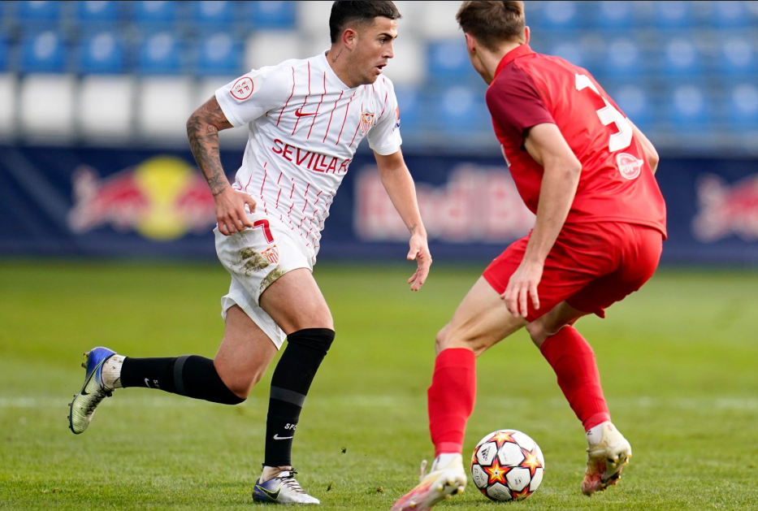

FutbolNoticia
FutbolNoticia
| Goles | Asistencias | Amodestaciones | Foto | |
|---|---|---|---|---|
| Messi | 8 | 4 | 1 |  |
| Mbappé | 15 | 10 | 1 |  |
| Koulibaly | 1 | 2 | 6 |  |
| Neymar | 10 | 3 | 6 |
2-0: DERROTA DEL JUVENIL ANTE EL SALZBURGO QUE LE LLEVA AL PLAYOFF DE LA UEFA YOUTH LEAGUE
El Sevilla FC Juvenil A ha caído derrotado ante el FC Salzburgo en la última jornada de la UEFA Youth League. El conjunto de Lolo Rosano, que dependía de sí mismo para quedar primero de grupo, ha sufrido más de lo esperado al final del encuentro, lamentando los dos tantos del equipo austriaco en las postrimerías del mismo, algo que le hace finalmente estar en el playoff a disputar ya en los inicios de 2022.